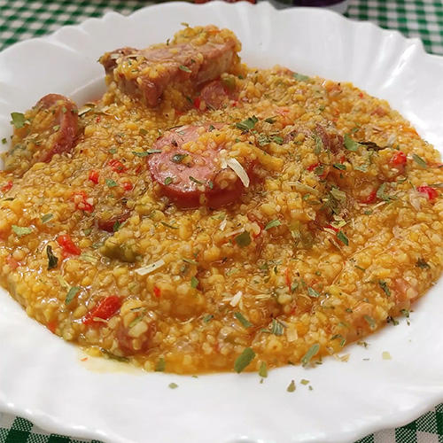
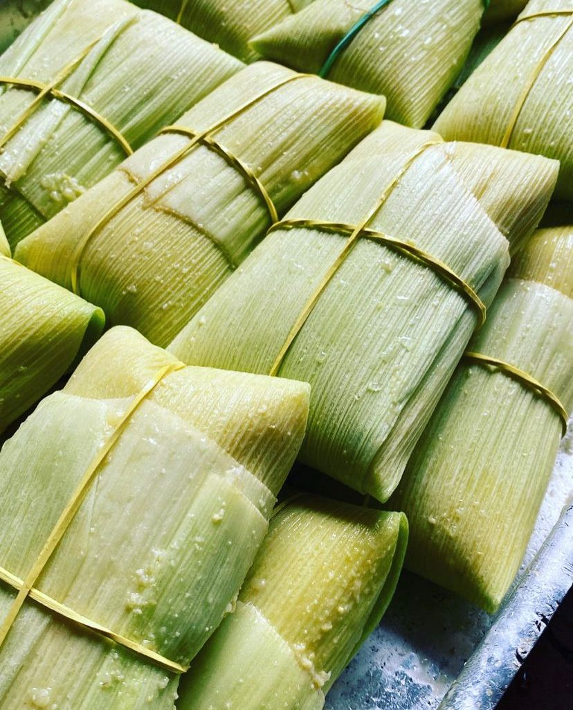

Produtos do Campo

Canjiquinha
Uma iguaria típica da festa junina, feita com milho e sabor inconfundível!

Pamonha
Feita de milho verde, com muito carinho e sabor caseiro. Uma verdadeira delícia!

Bolo de Milho
O tradicional bolo de milho para deixar sua festa ainda mais gostosa!